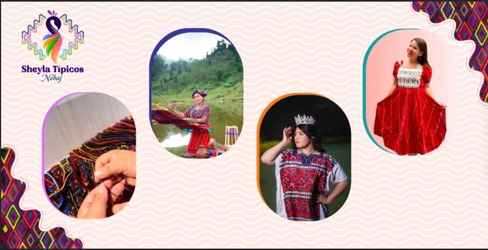

01
familia artesanal, sin SKU
Vestidos típicos bordados
Familia de prendas descrita y fotografiada en la web; consultar cada referencia al taller.

Imagen publicada por Sheyla Típicos NebajIndumentaria Maya Ixil de Nebaj. Explora las familias de prendas y prepara un pedido respetando el trabajo artesanal.
Guarda tus referencias en una lista local y prepara el siguiente paso. Precios, variantes y existencias se revisan en cada ficha oficial.
Familia de prendas descrita y fotografiada en la web; consultar cada referencia al taller.

Prendas identificadas en el texto alternativo de la galería oficial.

Accesorios textiles observados en una imagen de la galería oficial; diseño y disponibilidad por consultar.
Produce ropa típica, conjuntos y textiles artesanales; anuncia venta mayorista, minorista y pedidos personalizados.
Prueba cantidades y condiciones. Obtén un resumen local para revisar antes de hablar con la empresa.
Datos revisados el 3 de noviembre de 2026. La empresa confirma cualquier condición vigente.
Familia de prendas descrita y fotografiada en la web; consultar cada referencia al taller.
Prendas identificadas en el texto alternativo de la galería oficial.
Accesorios textiles observados en una imagen de la galería oficial; diseño y disponibilidad por consultar.
La empresa familiar se presenta desde Nebaj, Quiché, Guatemala.
El sitio describe trabajo con mujeres artesanas y tejedoras Maya Ixiles.
La página anuncia venta por mayor y al detalle.
La web publica pedidos personalizados, sujetos a conversación y aprobación.
La página presenta familias e imágenes de prendas; no se verificó inventario por referencia.